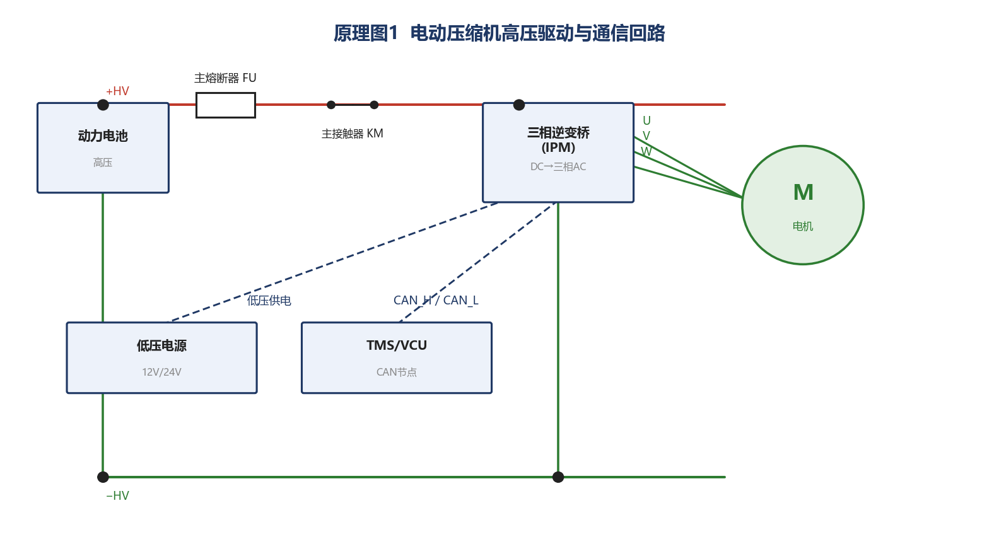
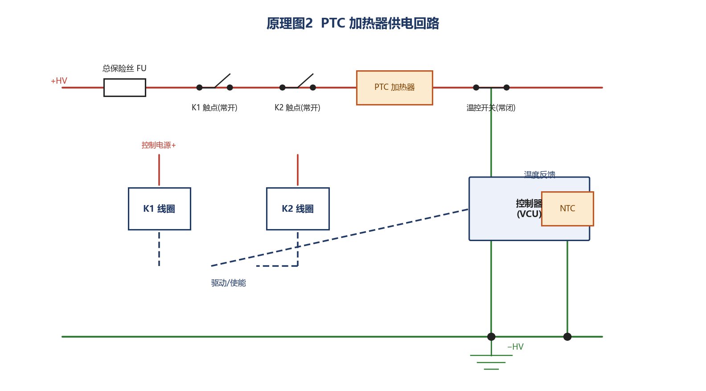
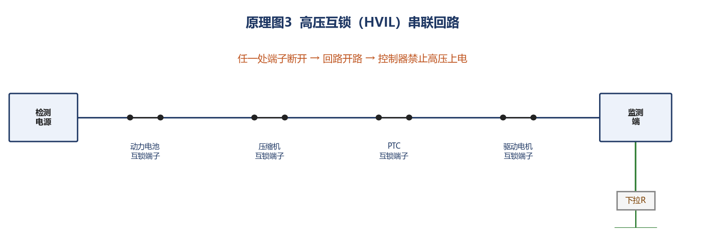
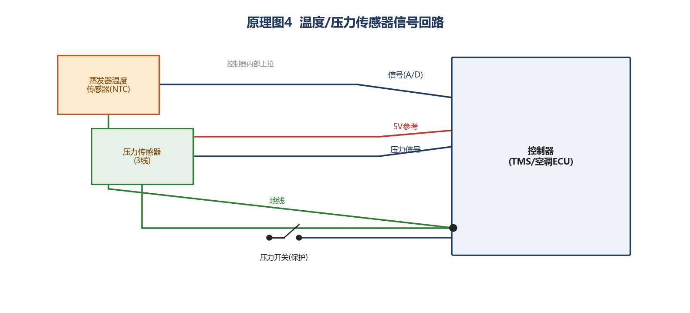
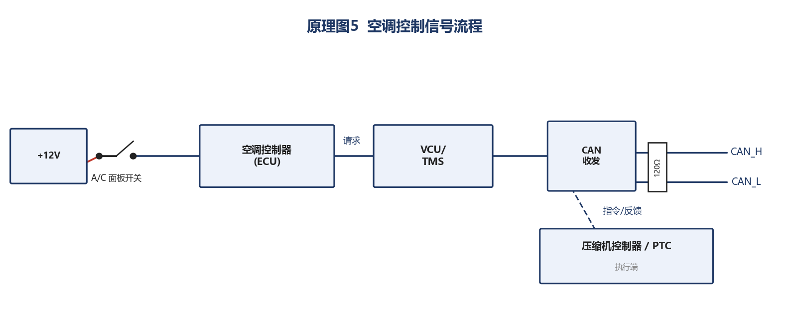

理想 i9 空调系统 · 故障排查流程
以文字形式完整记录从「明确故障」到「书写结论」的标准排查步骤，覆盖故障范围界定、故障码读取、测量数据留存与结果书写四个环节。
步骤 1 · 明确故障范围与成因
步骤 2 · 读取故障码、留存测量数据
步骤 3 · 测量电路与电压
使用数字万用表、电流钳、绝缘电阻表、歧管压力表组，按以下项目逐项测量并记录：
| 检测项目 | 检测点 | 参考值 | 实测值(示例) | 判定 |
|---|---|---|---|---|
| 高压管路压力 | 高压检修阀 | 14 ~ 16 bar | 9.2 bar | 偏低 |
| 低压管路压力 | 低压检修阀 | 2.0 ~ 2.5 bar | 3.8 bar | 偏高 |
| 高压母线电压 | 压缩机高压插接件 | 350 ~ 400 V | 372 V | 正常 |
| 中心线(中性点)电压 | 压缩机三相端中心点 | ≈ 母线/2 | —(不平衡) | 异常 |
| 压缩机三相电流 | 相线(电流钳) | 三相均衡 | U相偏大 | 不平衡 |
| PTC 加热器电阻 | PTC 插头两端 | 1 ~ 5 Ω | 3.1 Ω | 正常 |
| 互锁回路电阻 | HVIL 监测端 | < 1 Ω | 0.3 Ω | 正常 |
| 传感器 5V 参考 | 压力传感器 1 脚 | 4.9 ~ 5.1 V | 5.02 V | 正常 |
| CAN 网络电阻 | OBD 6/14 引脚 | ≈ 60 Ω | 61 Ω | 正常 |
中心线电压说明：电动压缩机内部为三相电机，其三相绕组中性点（中心线）电压应约等于母线电压的一半且稳定。若出现三相不平衡，说明电机绕组存在匝间短路、断路或绝缘劣化，是判断电机损坏的关键依据。
步骤 4 · 结果书写清晰
电路查阅 · 故障点标注 · 原理分析
查阅并绘制理想 i9 空调系统关键电路，标注故障点位置（线路断裂、电机损坏），并给出故障排除结果、最终原因与失效原理。
一、电路资料查阅
本次查阅该车型空调系统的 5 张关联电路图：①压缩机驱动电路、②PTC 加热电路、③高压互锁回路、④传感器电路、⑤控制与通信电路。唤醒/控制逻辑、熔断器与继电器编号、插接件针脚以维修手册对应章节为准。
二、电路图绘制与故障点标注

故障点 A — 线路断裂：三相逆变桥输出相线、CAN 通信线一旦断裂，会导致缺相、通信丢失，控制器报码停机。 故障点 B — 电机损坏：压缩机电机绕组匝间短路/断路（标注于电机符号处），三相电流不平衡，触发过流保护。

线路断裂/熔断：保险丝熔断、PTC 供电线路断裂或继电器触点烧蚀，均使 PTC 无法得电。 部件损坏：PTC 发热体本体断路或短路（正常电阻 1~5 Ω）。

故障点 A — 线路断裂：任一高压接插件松动、脱落或互锁线断裂，回路开路（电阻无穷大，正常 <1 Ω）。

故障点 A — 线路断裂：信号线断裂或地线虚接，导致信号电压异常，压缩机频繁启停或不停机。

故障点 A — 线路断裂：CAN_H/CAN_L 断裂或控制线路开路，导致通信丢失（如 B14200），压缩机无法启动。
三、故障排除结果
依据数据判定，本例故障定位为：压缩机电机绕组匝间短路（高/低压压力异常 + 三相电流不平衡 + 中心线电压失衡），并伴有三相逆变桥输出相线插头端子烧蚀松脱（相当于线路断裂）。
修复措施：更换同型号电动压缩机总成 → 修复/更换烧蚀端子与线束 → 对制冷剂回路抽真空保压、按铭牌定量加注 → 清除故障码并路试。修复后系统恢复正常，故障码不再复现。
四、最终故障原因与原理分析
最终故障原因：压缩机电机定子绕组匝间绝缘劣化，导致匝间短路；长期大电流使相线端子过热烧蚀、产生接触不良（局部断线）。
失效原理：
① 电机匝间短路 → 三相绕组阻抗不平衡 → 三相电流不均衡、中心线电压偏移；控制器检测到过流/缺相后进入保护，停止压缩机输出 → 制冷剂不再循环，系统丧失制冷能力，表现为「高压偏低、低压偏高、完全/间歇不制冷」。
② 相线端子过热烧蚀 → 接触电阻增大 → 局部相当于线路断裂 → 加剧缺相与发热，与绕组短路互为因果，最终导致压缩机彻底停转。
③ 同理，若为线路断裂型故障（如互锁线断、CAN 线断、传感器信号线断），则是「信号/供电中断 → 保护停机或误判」这一失效链路，同样造成系统功能丧失。